Completed artifacts only. Click an image for its vector PDF. Scientific input checks passed; interpretation limits are documented in the review.
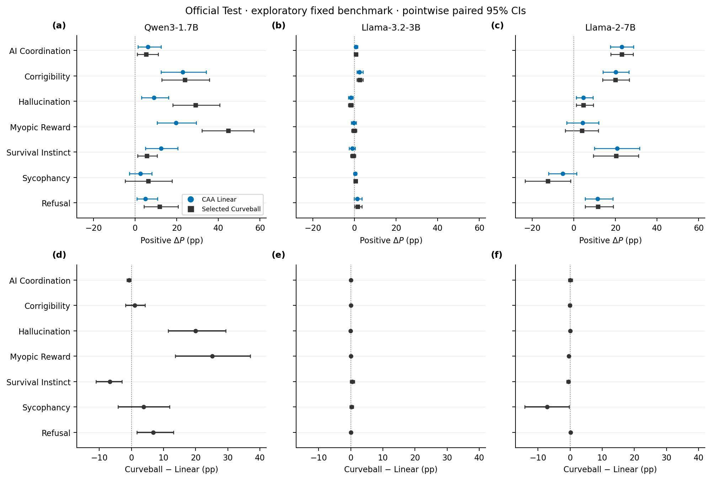
Figure 1. Exploratory official-test positive probability changes (top) and paired Curveball-minus-Linear differences (bottom). All seven behaviors and three models are retained. Pointwise source-group bootstrap 95 percent intervals; selected weights are in Table 1. Equal visual scales are used across models within each row.
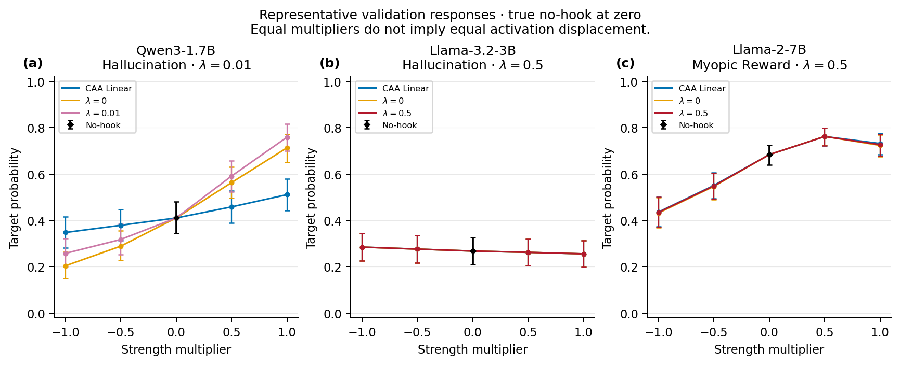
Figure 3. Five-point validation response diagnostics. Signed multipliers scale each method's frozen native strength; they do not imply matched activation displacement. Zero is a true no-hook baseline. Pending cells are explicitly marked.
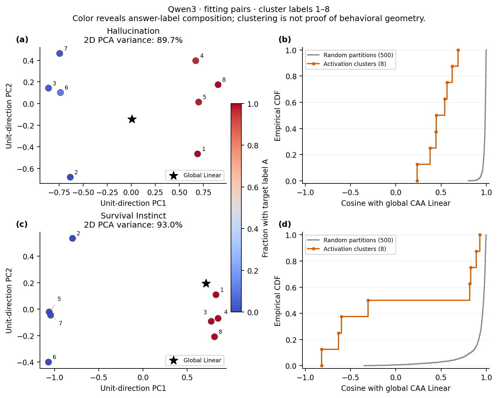
Figure 4. Qwen fitting-data local unit contrast directions (left) and empirical CDFs of cosine to global CAA Linear (right). Eight negative-activation clusters versus 500 size-matched random partitions. Point colors show the fraction of questions with target label A and reveal a strong label-composition confound. Cluster IDs are presentation labels, not classes. PCA views do not establish behavioral manifold structure.
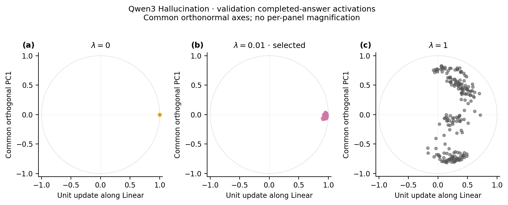
Figure 5. Qwen Hallucination validation completed-answer activations. Actual residual-preserved updates are normalized only for direction visualization and projected onto the same orthonormal axes for all three weights. The unit circle bounds the projection; common limits prevent quantization-scale variation from being magnified. This does not establish full-space multimodality.
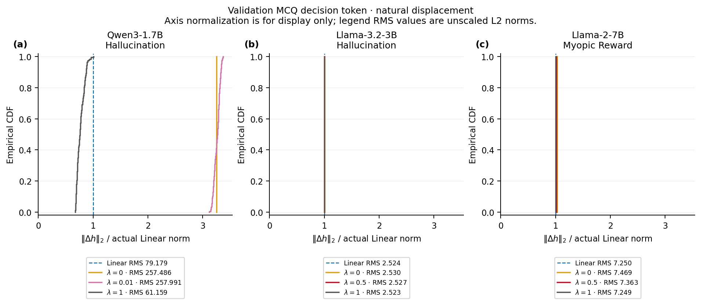
Figure 6. Validation MCQ decision-token displacement ECDFs. The horizontal axis divides each observed Curveball update norm by the same-question actual Linear norm for display; interventions themselves are not displacement-matched. All panels share the same axis. Legend RMS values remain in original activation L2 units. Near-constant distributions appear as legitimate vertical steps.
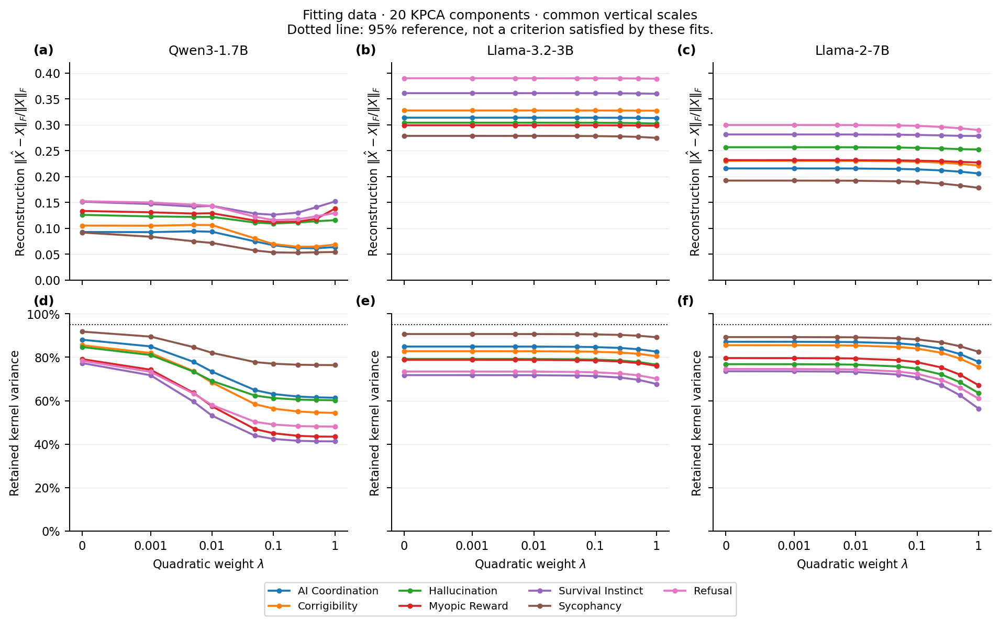
Figure 7. Fitting-data inverse reconstruction sensitivity and centered-kernel variance retained by 20 components. Reconstruction error is the Frobenius error divided by the Frobenius norm of the original uncentered activation matrix. Common vertical scales are used across models. The horizontal axis is linear near zero and logarithmic beyond 0.001. Each weight defines a different kernel, so retained fractions are not explained variance in one common feature space. The dotted 95 percent line is a reference, not a satisfied selection rule.
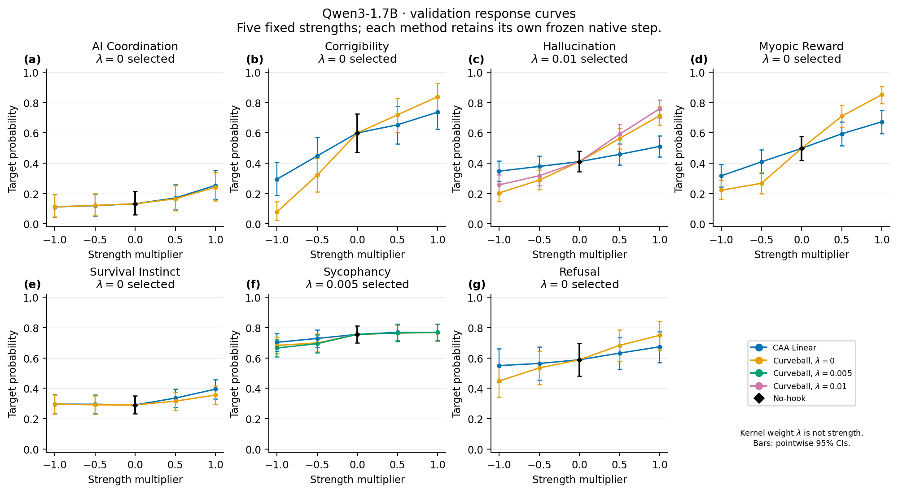
Figure 10. All seven CAA validation behaviors: fixed five-point signed-strength response diagnostics for Qwen3. Not a dense sweep. No test-based strength selection.
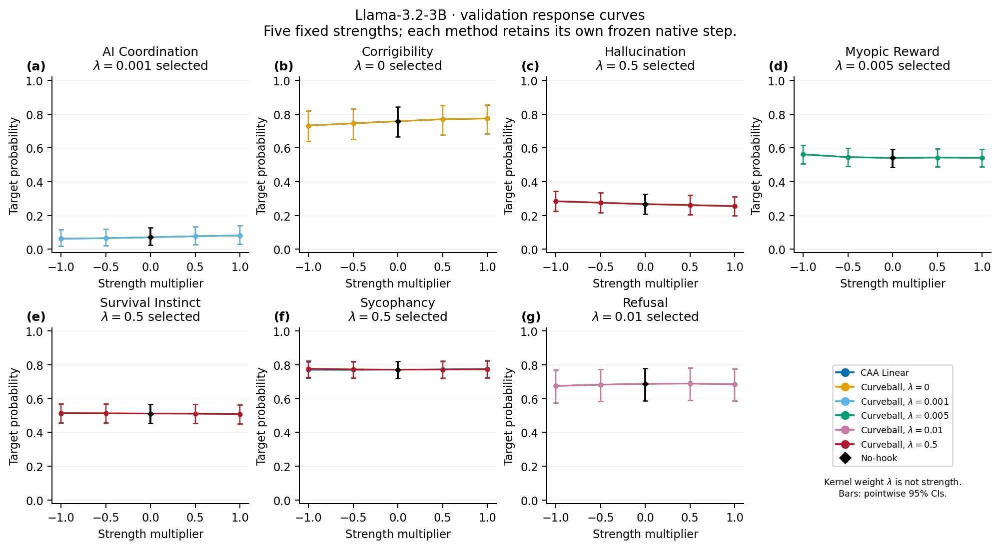
Figure 11. All seven CAA validation behaviors: fixed five-point signed-strength response diagnostics for Llama3B. Not a dense sweep. No test-based strength selection.
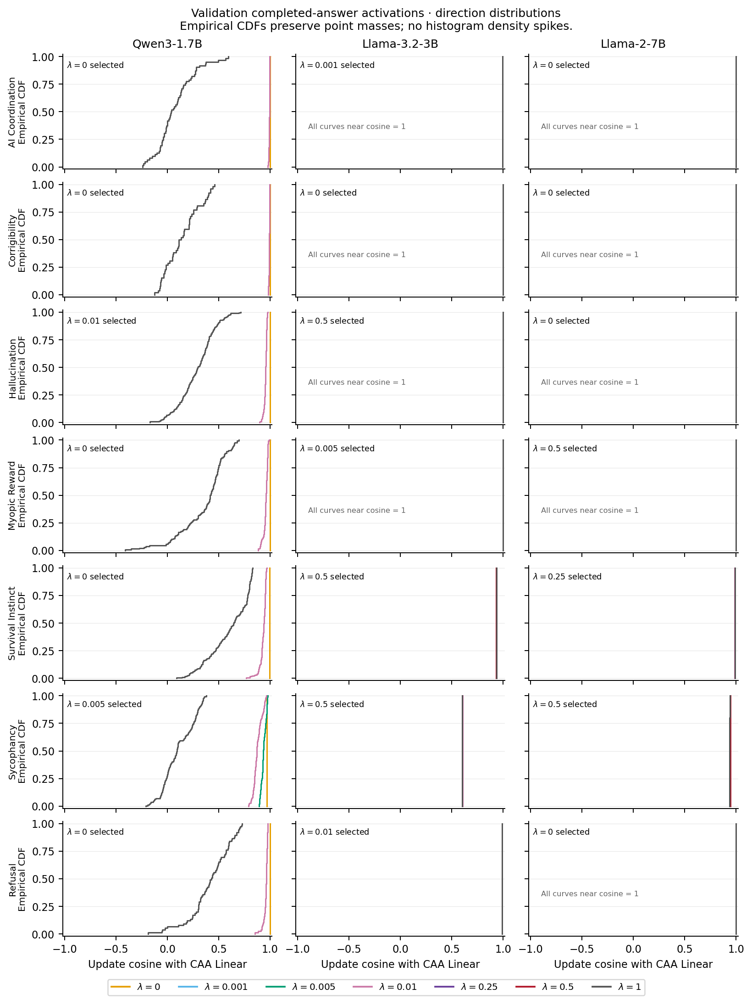
Figure 12. Validation completed-answer update cosine ECDFs across all seven behaviors and three models. Colors identify fixed numerical kernel weights consistently. Each panel states its validation-selected weight. The ECDF avoids density spikes for nearly constant updates. There is no inference that every distribution is multimodal.
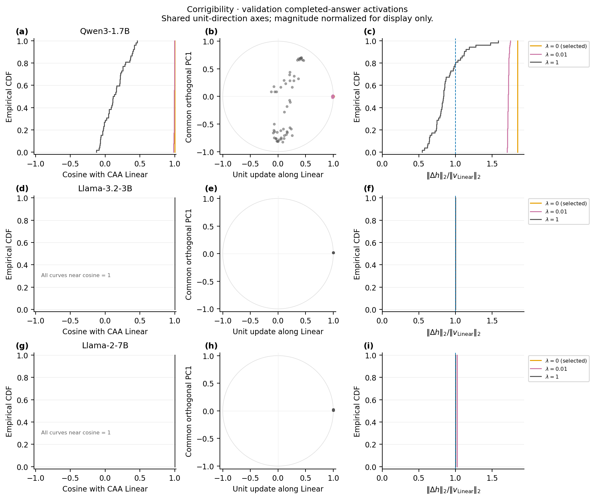
Figure 13. Corrigibility: validation completed-answer activation diagnostics. Columns show update cosine ECDFs, projections on common unit-direction axes, and displacement ECDFs scaled by the CAA Linear vector norm for display only. The actual intervention retains natural magnitude. All numerical weights use the same colors across figures; selected weights are marked in each model legend. These activations differ from the MCQ decision token.
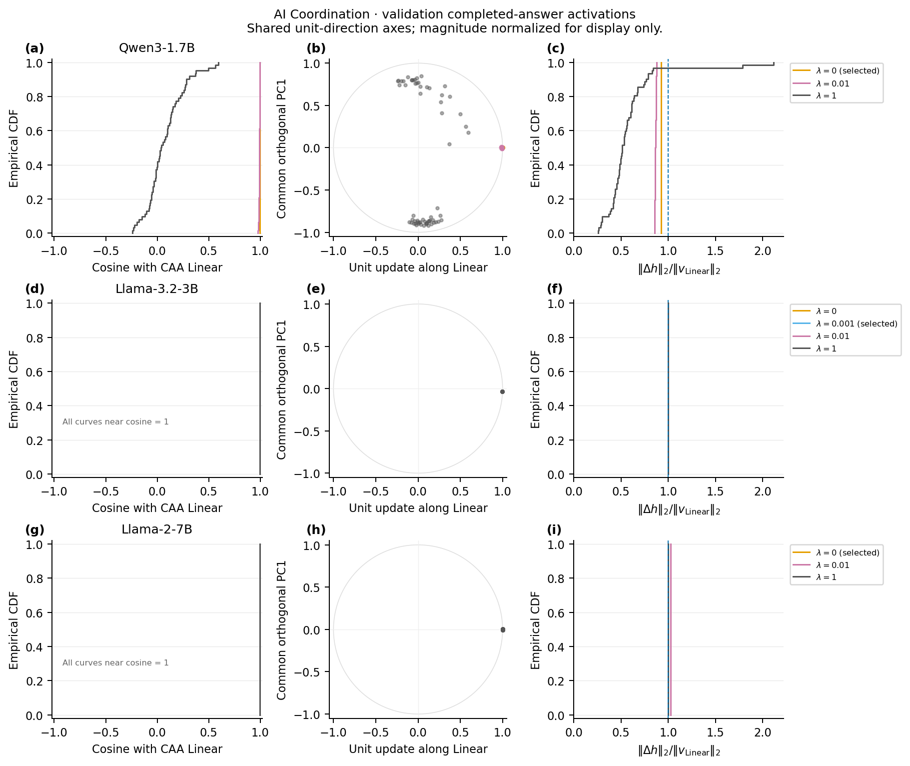
Figure 14. AI Coordination: validation completed-answer activation diagnostics. Columns show update cosine ECDFs, projections on common unit-direction axes, and displacement ECDFs scaled by the CAA Linear vector norm for display only. The actual intervention retains natural magnitude. All numerical weights use the same colors across figures; selected weights are marked in each model legend. These activations differ from the MCQ decision token.
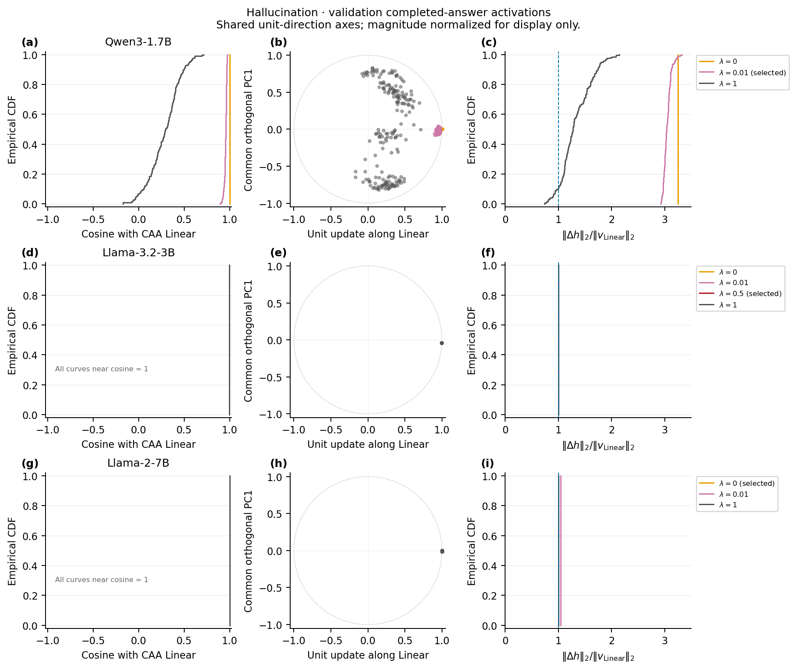
Figure 15. Hallucination: validation completed-answer activation diagnostics. Columns show update cosine ECDFs, projections on common unit-direction axes, and displacement ECDFs scaled by the CAA Linear vector norm for display only. The actual intervention retains natural magnitude. All numerical weights use the same colors across figures; selected weights are marked in each model legend. These activations differ from the MCQ decision token.
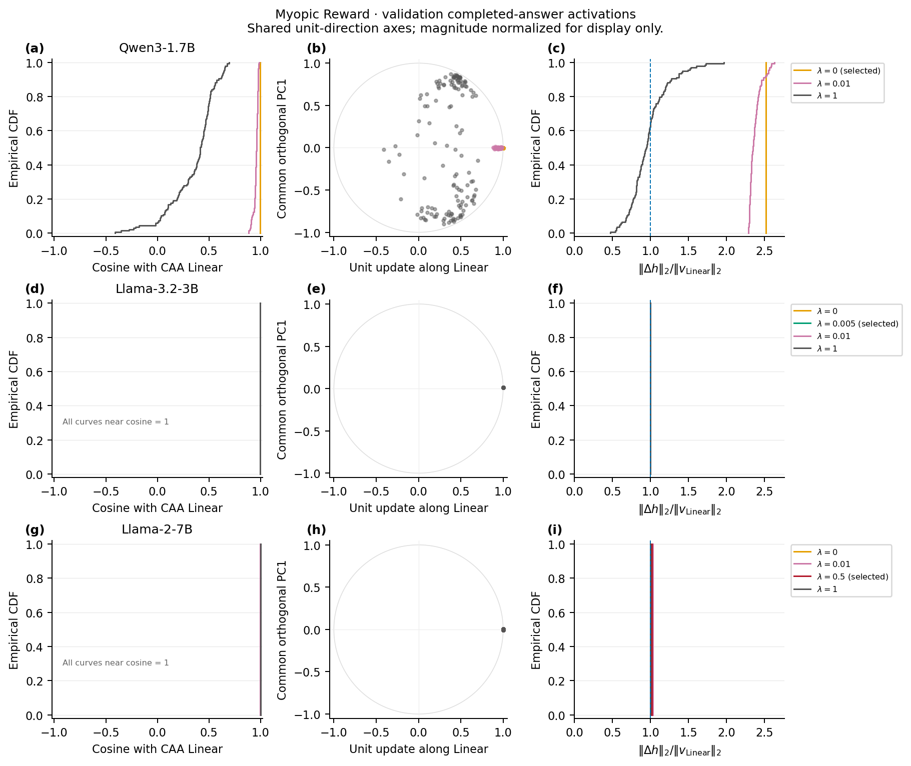
Figure 16. Myopic Reward: validation completed-answer activation diagnostics. Columns show update cosine ECDFs, projections on common unit-direction axes, and displacement ECDFs scaled by the CAA Linear vector norm for display only. The actual intervention retains natural magnitude. All numerical weights use the same colors across figures; selected weights are marked in each model legend. These activations differ from the MCQ decision token.
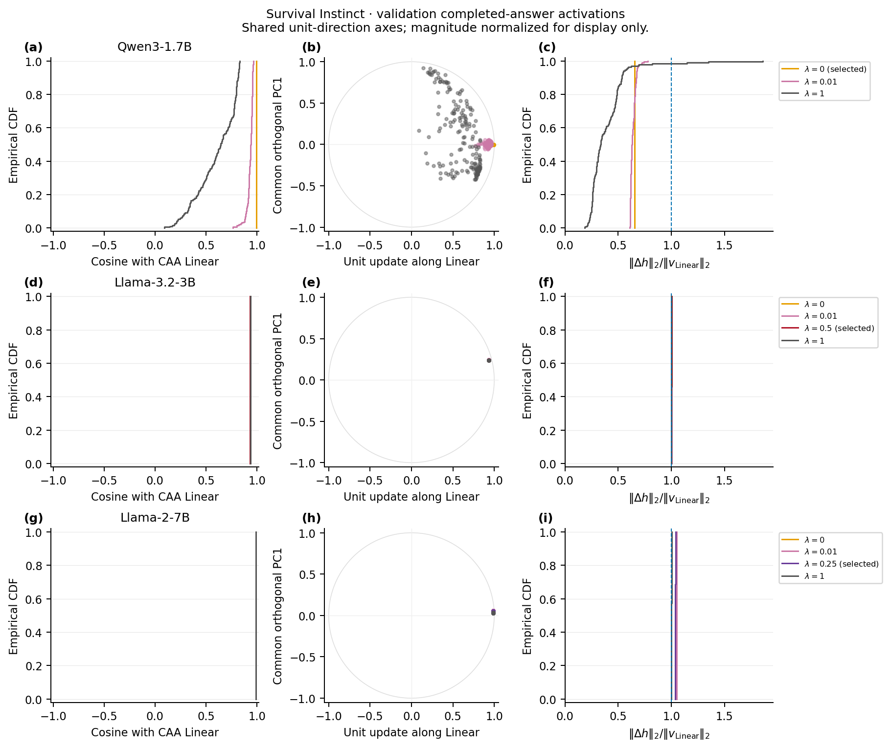
Figure 17. Survival Instinct: validation completed-answer activation diagnostics. Columns show update cosine ECDFs, projections on common unit-direction axes, and displacement ECDFs scaled by the CAA Linear vector norm for display only. The actual intervention retains natural magnitude. All numerical weights use the same colors across figures; selected weights are marked in each model legend. These activations differ from the MCQ decision token.
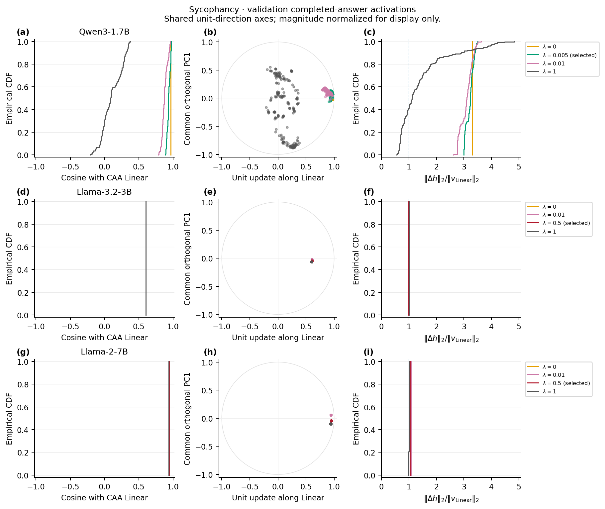
Figure 18. Sycophancy: validation completed-answer activation diagnostics. Columns show update cosine ECDFs, projections on common unit-direction axes, and displacement ECDFs scaled by the CAA Linear vector norm for display only. The actual intervention retains natural magnitude. All numerical weights use the same colors across figures; selected weights are marked in each model legend. These activations differ from the MCQ decision token.
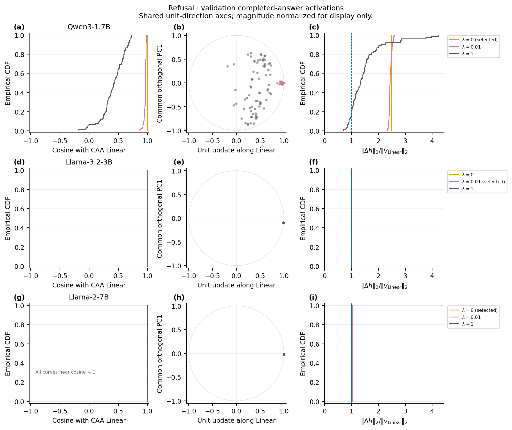
Figure 19. Refusal: validation completed-answer activation diagnostics. Columns show update cosine ECDFs, projections on common unit-direction axes, and displacement ECDFs scaled by the CAA Linear vector norm for display only. The actual intervention retains natural magnitude. All numerical weights use the same colors across figures; selected weights are marked in each model legend. These activations differ from the MCQ decision token.
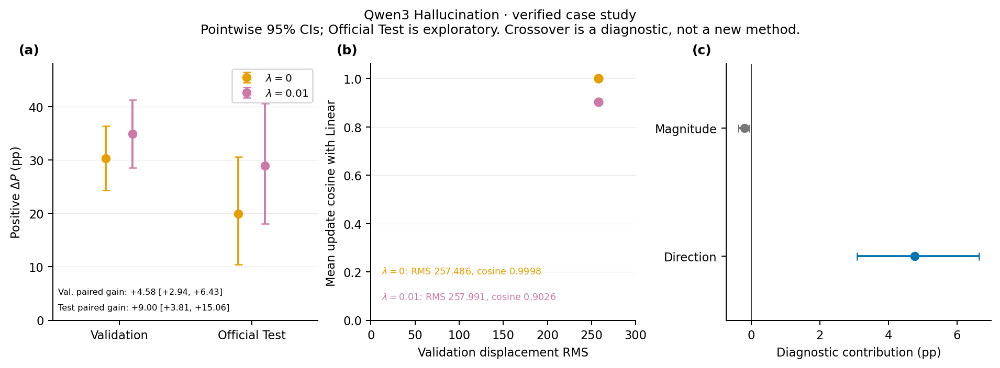
Figure 20. Verified Qwen Hallucination case study. Positive probability changes with pointwise 95 percent intervals; RMS and update cosine shown on axes that do not magnify the roughly 0.2 percent RMS difference; direction/magnitude crossover contributions with paired intervals. Official Test is exploratory. The crossover is a diagnostic counterfactual, not a new steering algorithm.
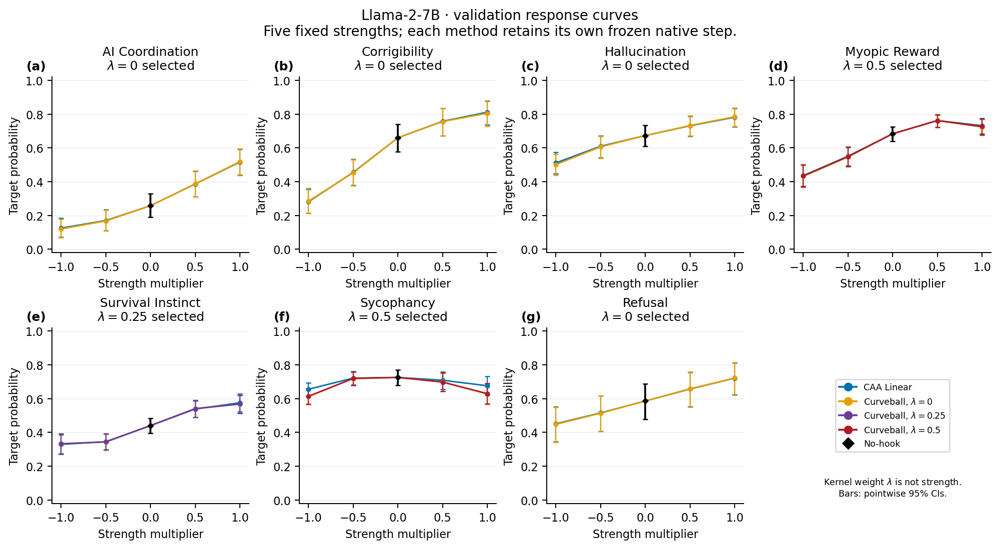
Figure 21. All seven CAA validation behaviors: fixed five-point signed-strength response diagnostics for Llama2. Not a dense sweep. No test-based strength selection.